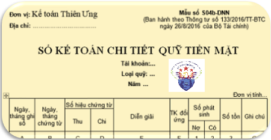

Hướng dẫn cách lập Sổ kế toán chi tiết quỹ tiền mặt theo Thông tư 133 và 200, mục đích, Căn cứ và phương pháp ghi sổ kế toán chi tiết quỹ tiền mặt dùng cho kế toán tiền mặt.
1. Mẫu sổ kế toán chi tiết quỹ tiền mặt theo Thông tư 133:
|
Đơn vị: Kế toán Diệu Tâm Địa chỉ: …………………………... |
Mẫu số S04b-DNN (Ban hành theo Thông tư số 133/2016/TT-BTC ngày 26/8/2016 của Bộ Tài chính) |
SỔ KẾ TOÁN CHI TIẾT QUỸ TIỀN MẶT
Tài khoản:...
Loại quỹ: ...
Năm ...
Tài khoản:...
Loại quỹ: ...
Năm ...
Đơn vị tính...
| Ngày, tháng ghi sổ | Ngày, tháng chứng từ | Số hiệu chứng từ | Diễn giải | TK đối ứng | Số phát sinh | Số tồn | Ghi chú | ||
| Thu | Chi | ||||||||
| Nợ | Có | ||||||||
| A | B | C | D | E | F | 1 | 2 | 3 | G |
|
- Số tồn đầu kỳ - Số phát sinh trong kỳ |
|||||||||
| - Cộng số phát sinh trong kỳ | x | x | x | ||||||
| - Số tồn cuối kỳ | x | x | x | x | |||||
- Ngày mở sổ:...
|
Người lập biểu
(Ký, họ tên) |
Kế toán trưởng (Ký, họ tên) |
Ngày 15 tháng 09 năm 2026 Người đại diện theo pháp luật (Ký, họ tên, đóng dấu) |
Tải Mẫu Sổ chi tiết quỹ tiền mặt Excel theo Thông tư 133 và 200:
Nếu bạn không tải về được thì có thể làm theo cách sau:
Bước 1: Để lại mail ở phần bình luận bên dưới
Bước 2: Gửi yêu cầu vào mail: ketoandieutam@gmail.com (Tiêu đề ghi rõ Tài liệu muốn tải)
2. Cách lập Sổ kế toán chi tiết quỹ tiền mặt:
1. Mục đích:
- Sổ này dùng cho kế toán tiền mặt để phản ánh tình hình thu, chi tồn quỹ tiền mặt bằng tiền Việt Nam của đơn vị.
2. Căn cứ và phương pháp ghi sổ:
- Sổ này dùng cho kế toán chi tiết quỹ tiền mặt và tên sổ là “Sổ kế toán chi tiết quỹ tiền mặt”. Tương ứng với 1 sổ của thủ quỹ thì có 1 sổ của kế toán cùng ghi song song.
- Căn cứ để ghi sổ quỹ tiền mặt là các Phiếu thu, Phiếu chi đã được thực hiện nhập, xuất quỹ.
- Cột A: Ghi ngày tháng ghi sổ.
- Cột B: Ghi ngày tháng của Phiếu thu, Phiếu chi.
- Cột C, D: Ghi số hiệu của Phiếu thu, số hiệu Phiếu chi liên tục từ nhỏ đến lớn.
- Cột E: Ghi nội dung nghiệp vụ kinh tế của Phiếu thu, Phiếu chi.
- Cột F: “Tài khoản đối ứng”: Phản ánh số hiệu Tài khoản đối ứng với từng nghiệp vụ ghi Nợ, từng nghiệp vụ ghi Có của Tài khoản 111 “Tiền mặt”.
- Cột 1: Số tiền nhập quỹ.
- Cột 2: Số tiền xuất quỹ.
- Cột 3: Số dư tồn quỹ cuối ngày. Số tồn quỹ cuối ngày phải khớp đúng với số tiền mặt trong két.
Định kỳ kế toán kiểm tra, đối chiếu giữa “Sổ kế toán chi tiết quỹ tiền mặt” với “Sổ quỹ tiền mặt”, ký xác nhận vào cột G.
Xem thêm: Mẫu sổ quỹ tiền mặt
Kế toán Diệu Tâm chúc các bạn thành công!
